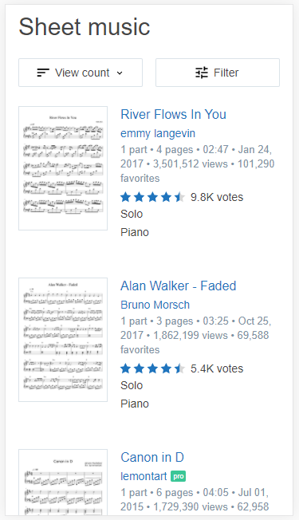

Design Principles Document
Rosa M. Lal
White Space and Clean Design
Musescore www.musescore.com
Musescore makes excellentuse of whitespace to separate different products. This declutters the webpage giving it a cleaner look. Users are able to clearer distinguish the listed items and their descriptions
Repetition
RollingStone
www.rollingstone.com
RollingStone uses the repe
Principle's Title
Organization/Company Name Google
Description